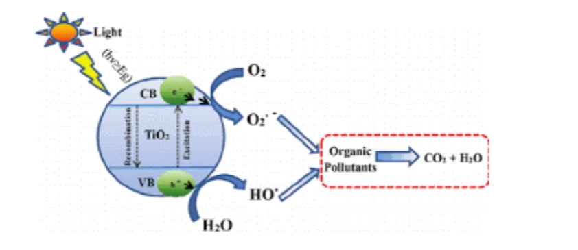
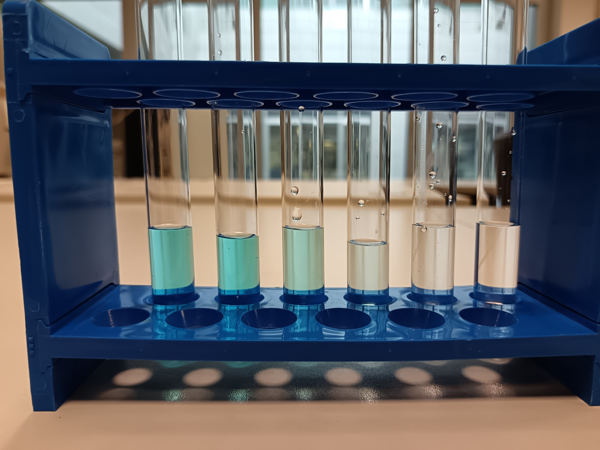
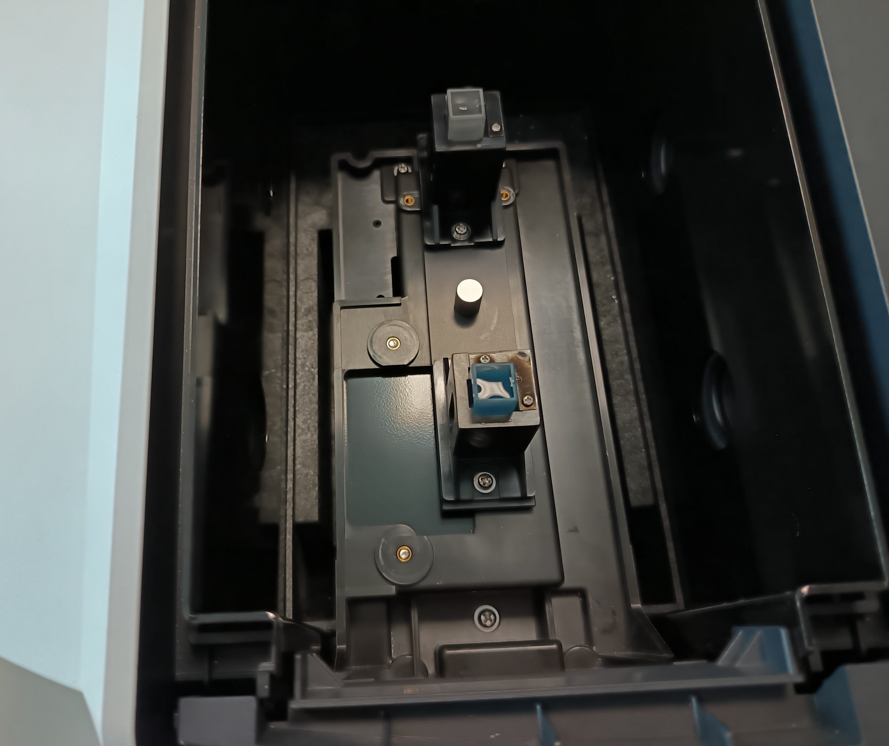
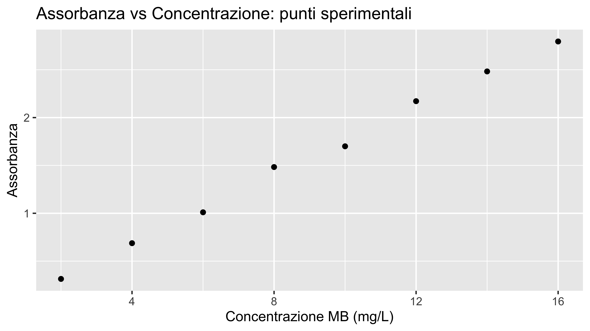
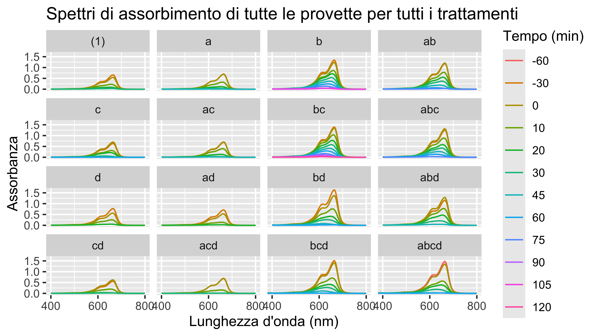
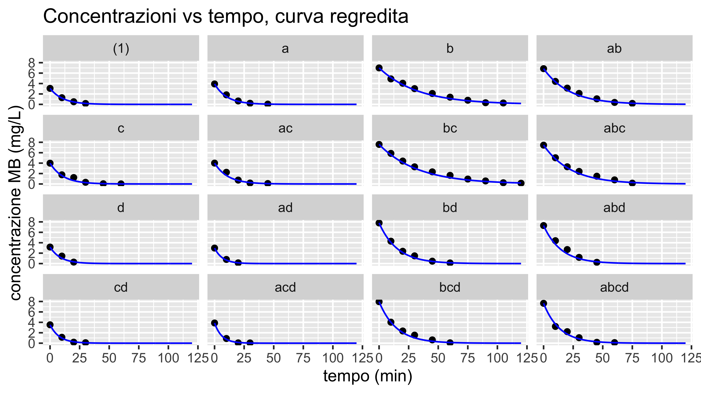
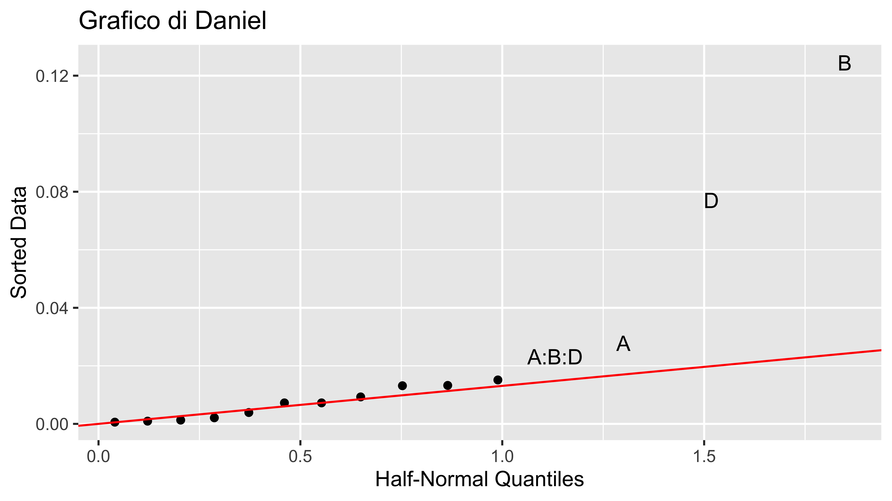
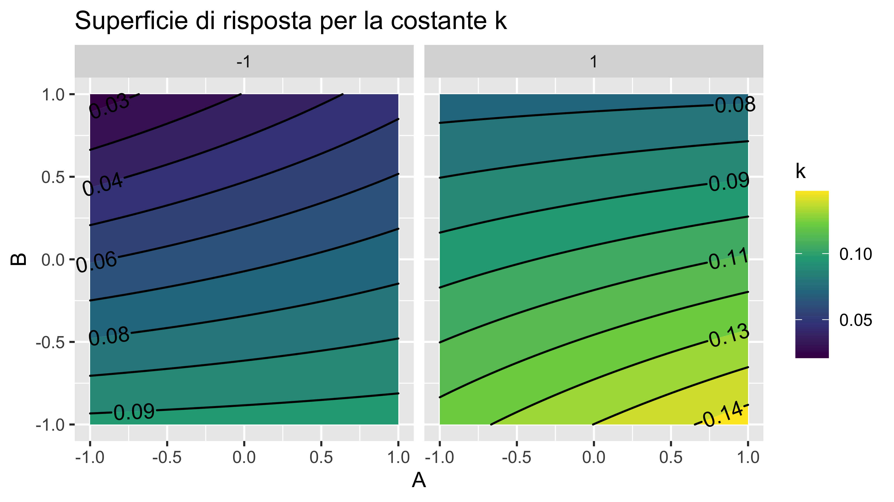

| StdOrder | RunOrder | .treat | .rep | A | B | C | D | A_s | B_s | C_s | D_s | Y |
|---|---|---|---|---|---|---|---|---|---|---|---|---|
| 1 | 1 | (1) | 1 | -1 | -1 | -1 | -1 | 0.2 | 4 | 8 | 3 | NA |
| 2 | 6 | a | 1 | 1 | -1 | -1 | -1 | 0.4 | 4 | 8 | 3 | NA |
| 3 | 8 | b | 1 | -1 | 1 | -1 | -1 | 0.2 | 8 | 8 | 3 | NA |
| 4 | 16 | ab | 1 | 1 | 1 | -1 | -1 | 0.4 | 8 | 8 | 3 | NA |
| 5 | 12 | c | 1 | -1 | -1 | 1 | -1 | 0.2 | 4 | 22 | 3 | NA |
| 6 | 11 | ac | 1 | 1 | -1 | 1 | -1 | 0.4 | 4 | 22 | 3 | NA |
| 7 | 15 | bc | 1 | -1 | 1 | 1 | -1 | 0.2 | 8 | 22 | 3 | NA |
Degradazione fotocatalitica di soluzioni di blu di metilene
Tommaso Stefani
2025-09-01
Descrizione dell’attività
Descrizione dell’attività
Nella presente attività si conducono reazioni di fotocatalisi per determinare come varia la velocità di degradazione fotocatalitica di soluzioni acquose di blu di metilene al variare di diversi fattori presi in considerazione.
Allo scopo è necessaria una progettazione dell’esperimento (DoE) che permetta di valutare statisticamente come ogni fattore tra quelli presi in considerazione influenzi la velocità (= la resa) del processo.
I fattori che si considerano sono:
- concentrazione di catalizzatore
- concentrazione di blu di metilene
- intensità luminosa (numero di lampade UV accese durante la reazione)
- temperatura della soluzione
Richiami teorici
Blu di metilene
Il blu di metilene (MB) è un colorante organico ampiamente utilizzato come molecola sonda per testare l’efficienza di processi di decontaminazione di effluenti acquosi, in quanto presenta:
- Colore intenso (blu brillante),
- Facilità di solubilizzazione in acqua,
- Spettro di assorbimento ben definito nell’UV-visibile,
- Stabilità e tracciabilità tramite spettrofotometria UV-Vis.
Lo spettro di assorbimento UV-Vis del MB mostra un massimo di assorbanza a 664 nm. Durante una reazione di degradazione, questa assorbanza diminuisce progressivamente, segnalando la riduzione della concentrazione della molecola in soluzione.
Blu di metilene

Il blu di metilene (MB) viene utilizzato in questa attività come molecola modello perché facilmente rilevabile; la sua degradazione non ha rilevanza pratica, ma permette di valutare l’efficacia di processi fotocatalitici destinati a inquinanti organici reali.
Meccanismo di reazione
Il processo di fotocatalisi eterogenea sfrutta semiconduttori come il biossido di titanio (TiO₂), che viene attivato da radiazione UV. Il meccanismo alla base della reazione considerata è il seguente:
Attivazione del fotocatalizzatore: \(\text{TiO}_2 + h\nu \rightarrow e^- + h^+\)
Reazioni alle interfacce:
Riduzione dell’ossigeno disciolto da parte degli elettroni \(e^-\): \(O_2 + e^- \rightarrow O_2^{\cdot-}\)
Ossidazione dell’acqua da parte delle lacune: \(h^+\): \(H_2O + h^+ \rightarrow \cdot OH + H^+\)
- Degradazione del blu di metilene: \(\text{MB} + \cdot OH \rightarrow \text{prodotti ossidati}\)
Queste specie reattive degradano il blu di metilene in composti meno complessi, fino alla completa mineralizzazione (\(CO_2\), \(H_2O\), sali inorganici).
Meccanismo di reazione
In figura la sintesi di quanto detto:


Cinetica della reazione
La degradazione fotocatalitica del MB segue una cinetica di primo ordine, governata dalla seguente equazione differenziale:
\[ \frac{dC}{dt} = -k \cdot C \]
dove:
- \(C\) è la concentrazione del MB al tempo \(t\),
- \(C_0\) è la concentrazione iniziale (\(t = 0\)),
- \(k\) è la costante cinetica (in \(min^{-1}\)).
La soluzione dell’equazione risulta \(\ln\left(\frac{C}{C_0}\right) = -kt\), oppure \(C(t) = C_0 \cdot e^{-kt}\)
Misura della concentrazione tramite UV-Vis
Per determinare l’andamento della concentrazione del blu di metilene nel tempo, si misura l’assorbanza della soluzione a 664 nm. In base alla legge di Lambert-Beer, la relazione tra assorbanza e concentrazione è:
\[ A = \varepsilon \cdot l \cdot C \]
dove \(A\) è l’assorbanza misurata, \(\varepsilon\) è il coefficiente di estinzione molare del blu di metilene, \(l\) è il cammino ottico della cuvetta (in genere 1 cm) e \(C\) è la concentrazione.
Poiché \(\varepsilon\) e \(l\) sono costanti nelle condizioni sperimentali, la concentrazione si può ottenere da:
\[ C = \frac{A}{\varepsilon \cdot l} \]
Misura della concentrazione tramite UV-Vis

Sarà quindi necessario raccogliere i dati relativi agli spettri di assorbimento di soluzioni a concentrazione nota di MB in modo da calibrare un modello che leghi la concentrazione all’assorbanza.
In questo modo, tramite la misura dell’assorbanza sarà possibile risalire alla concentrazione di una soluzione di MB.
Design of Experiments (DoE)
Il DoE è l’insieme delle metodologie statistiche utili a pianificare esperimenti in modo efficiente, al fine di poter studiare l’effetto di più fattori realizzando il minor numero di prove necessarie. Il piano fattoriale definisce quali combinazioni testare.
Quando i fattori sono tanti, si usano di frequente:
Piani frazionati su due livelli: testano solo alcune combinazioni di fattori.
Metodo di Daniel: individua i fattori significativi con un Q-Q plot. Gli effetti non significativi si allineano lungo la diagonale, quelli grandi no.
Eliminando gli effetti non significativi, si può fare l’analisi ANOVA anche senza ripetizioni esplicite.
Parte sperimentale
Apparecchiatura
- Blu di metilene (\(MB\))
- Acqua distillata
- Fotocatalizzatore (\(TiO_2\))
- Cilindro graduato da 250 ml
- Agitatore magnetico
- Becher da 250 ml
- Matraccio
- Due siringhe da 10 ml
- Filtro per siringa
- Lampade UV
- Cuvette portacampioni
- Carta assorbente
Procedimento
Per ogni prova (trattamento) prevista dal piano fattoriale, si preleveranno campioni della soluzione in provette separate, a partire da 30 minuti prima dell’accensione delle lampade (tempo zero) e poi a intervalli di tempo definiti fino al completamento della reazione. Questi campioni permetteranno, tramite spettrofotometria UV-Vis, di seguire l’andamento della concentrazione di MB nel tempo per tutte le soluzioni, rappresentanti i diversi trattamenti.
Allo scopo:
- Preparare una soluzione madre di MB a 16 mg/L in un matraccio, in quantità sufficiente per tutte le prove previste dal piano fattoriale. Questa soluzione costituirà la soluzione di partenza per ogni esperimento.
Per ogni prova prevista dal piano fattoriale:
- Prelevare dal matraccio la quantità necessaria di soluzione madre e diluire per ottenere la concentrazione richiesta dalla prova.
Procedimento
Aggiungere alla soluzione il catalizzatore \(TiO_2\) nella quantità prevista.
Prelevare una quantità di soluzione di MB sufficiente a riempire la cuvetta dello spettrofotometro usando una siringa, filtrarla con un filtro applicato alla siringa e trasferirla in una provetta, identificandola chiaramente (ad esempio: prova 1, -30 min).
Trasferire la soluzione in un becher e lasciarla agitare al buio per 30 minuti mediante agitatore magnetico.
Prelevare nuovamente una quantità di soluzione di MB, filtrarla con la siringa e inserirla in una provetta, identificandola chiaramente (tempo 0).
Indossare occhiali di protezione, accendere le lampade UV e lasciare irraggiare la soluzione per intervalli di tempo definiti (ad esempio 10, 20, 30 minuti, fino al completamento della reazione). Al termine di ciascun intervallo, prelevare una quantità di soluzione, filtrarla con la siringa e trasferirla in una provetta, identificandola chiaramente.
Eseguire tramite lo spettrofotometro l’acquisizione dello spettro di assorbimento di ogni provetta (corrispondente ai vari tempi di prelievo)
Procedimento
In quanto sarà necessario regredire un modello che permetta di correlare l’assorbanza ai valori di concentrazione di MB della soluzione eseguire anche la misura di assorbanza di diverse soluzioni di MB corrispondenti a diverse concetrazioni note.
Informazioni di sicurezza:
- Blu di metilene: Frasi H: 302 (nocivo se ingerito)
- Utilizzare occhiali protettivi (radiazione UV)

Misura tramite Spettrofotometro UV-Vis
Lo Spettrofotometro è un dispositivo che misura l’intensità della luce prima e dopo aver attraversato un campione restituendo il valore dell’assorbanza dello stesso.
\[ A = \log_{10} \left( \frac{I_0}{I} \right) \]Misura tramite Spettrofotometro UV-Vis
La procedura di misura è la seguente:
- preparare la soluzione da analizzare e inserirla nella cuvetta portacampioni
- inserire la cuvetta nello spettrofotometro UV-Vis
- effettuare la misura di baseline (zero strumentale) con una cuvetta in cui vi è solvente puro (acqua distillata)
- impostare la scansione dello spettro su un intervallo di lunghezze d’onda opportuno (es. 400–800 nm)
- avviare la scansione per acquisire lo spettro di assorbanza completo
- lo spettro è memorizzabile come file di testo in cui per ogni lunghezza d’onda è riportato il valore dell’assorbanza
Elaborazione dei dati
Piano fattoriale
Si vuole indagare la relazione sperimentale che lega la \(k\) dell’equazione cinetica con i seguenti 4 fattori:
- concentrazione di \(TiO_2\) in g/l: fattore A (quantitativo)
- concentrazione di \(MB\) in g/l: fattore B(quantitativo)
- temperatura della soluzione in °C: fattore C (quantitativo)
- intensità luminosa (numero di lampade UV utilizzate): fattore D (qualitativo)
In quanto le prove richiedono un tempo di svolgimento rilevante bisogna ricorrere ad un piano frazionato o ad un piano non replicato.
Piano fattoriale
Le reazioni richiedono un tempo di svolgimento non indifferente, si analizzano quindi solo livello alto e livello basso di ogni fattore (al più si potrà dunque ottenere una relazione di tipo lineare).
Non si effettuano repliche, aspettandosi che almeno uno dei fattori o delle interazioni risulti essere non significativo. Se si realizza tale situazione si avrebbero di fatto delle repliche implicite nelle misure (cosa molto probabile dato il numero di fattori) che permettono di effettuare un’analisi ANOVA.
Esistono diversi approcci per raggiungere l’obiettivo dell’esperienza (verificare che le reazioni siano del primo ordine, determinare la costante \(k\) dell’equazione cinetica e determinare una relazione empirica che leghi la stessa ai fattori presi in considerazione); di seguito ne viene presentato uno come esempio.
Piano fattoriale
Le prove si identificano tramite la notazione di Yates. Si raccomanda di nominare i file ottenuti dallo spettrofotometro in maniera tale da poter poi implementare un codice che permetta di importare i dati in modo “automatico”.
Raccolta dati
Si lavora su due tabelle (in seguito sono riportate solo le prime righe) importando i dati ottenuti dallo spettrofotometro:
data_caliper i dati utili alla regressione del modello che lega assorbanza alla concentrazione (in ppm), tale tabella contiene i valori degli spettri relativi a soluzioni con diverse concentrazioni di MB.data_proveper i dati utili all’analisi oggetto della presente attività, contiene i dati degli spettri raccolti dalle provette prelevate a diversi tempi durante lo svolgimento della reazione, per tutte le prove effettuate.
| Concentration_mgL | Wavelength_nm | Absorbance |
|---|---|---|
| 2 | 400 | 0.0031 |
| 2 | 401 | 0.0028 |
| 2 | 402 | 0.0026 |
Raccolta dati
| .treat | time_min | Wavelength_nm | Absorbance |
|---|---|---|---|
| (1) | -30 | 400 | 0.0062 |
| (1) | -30 | 401 | 0.0059 |
| (1) | -30 | 402 | 0.0055 |
| (1) | -30 | 403 | 0.0052 |
| (1) | -30 | 404 | 0.0047 |
| (1) | -30 | 405 | 0.0042 |
Modello che lega la concentrazione di MB all’assorbanza
Le misure ottenute tramite spettrofotometro delle soluzioni a concentrazione nota (contenute in data_cali), permettono di graficare gli spettri delle stesse:
Modello che lega la concentrazione di MB all’assorbanza
Per trovare il coefficiente del modello che correla assorbanza con concentrazione (che deve essere lineare secondo la legge di Lambert-Beer) si individuano i valori di assorbanza che corrispondono al massimo degli spettri per le varie concentrazioni. Si noti che è presente una colonna RunOrder che riporta l’ordine con cui si sono eseguite le misurazioni allo spettrofotometro (ordine casuale).
| RunOrder | Concentration_mgL | Absorbance |
|---|---|---|
| 1 | 4 | 0.6875 |
| 2 | 10 | 1.7000 |
| 3 | 14 | 2.4825 |
| 4 | 6 | 1.0103 |
| 5 | 8 | 1.4832 |
| 6 | 16 | 2.7954 |
Modello che lega la concentrazione di MB all’assorbanza
Tali punti sperimentali, su un grafico Assorbanza vs Concentrazione sono:
Modello che lega la concentrazione di MB all’assorbanza
Si regredisce quindi il modello lineare che lega assorbanza con concentraizone di MB (in mg/L) ponendo nulla l’intercetta:
Call:
lm(formula = Absorbance ~ Concentration_mgL - 1, data = data_cali)
Residuals:
Min 1Q Median 3Q Max
-0.06282 -0.04070 -0.02137 0.02497 0.07294
Coefficients:
Estimate Std. Error t value Pr(>|t|)
Concentration_mgL 0.176282 0.001741 101.3 2.41e-12 ***
---
Signif. codes: 0 '***' 0.001 '**' 0.01 '*' 0.05 '.' 0.1 ' ' 1
Residual standard error: 0.04972 on 7 degrees of freedom
Multiple R-squared: 0.9993, Adjusted R-squared: 0.9992
F-statistic: 1.026e+04 on 1 and 7 DF, p-value: 2.412e-12Modello che lega la concentrazione di MB all’assorbanza
Si effettua l’analisi dei residui al fine di validare il modello (normalità e assenza di pattern):
Shapiro-Wilk normality test
data: .
W = 0.91243, p-value = 0.3715Modello che lega la concentrazione di MB all’assorbanza
L’andamento del modello regredito, insieme alla sua banda di confidenza al 95% è quindi:

Spettri delle varie prove
Si nota che per alcune prove non è stato necessario procedere fino a 90 minuti in quanto la reazione risultava gia conclusa (asintoticamente).
Curva cinetica della reazione e calcolo della costante k
Si vuole innanzitutto verificare che le reazioni condotte siano effettivamente del primo ordine (come suggerito da letteratura)
Sembrerebbe che dall’istante 0 (che corrisponde all’accensione delle lampade UV) l’andamento della concentrazione sia effettivamente a decadimento esponenziale, e quindi del primo ordine.
Curva cinetica della reazione e calcolo della costante k
Si ricorda che la forma linearizzata della soluzione dell’equazione differenziale che governa la cinetica della reazione è la seguente:
\[ \ln\left(\frac{C}{C_0}\right) = -kt \]
Ciò suggerisce di eseguire delle regressioni per i vari trattamenti utilizzando un modello lineare \(y \sim x\) in cui \(y=\ln(\frac{C}{C_0})\) in modo da determinare il valore della costante \(k\) per ogni trattamneto, unico parametro che descrive la velocità della reazione per il modello adottato.
Curva cinetica della reazione e calcolo della costante k
Si esegue quindi per ogni trattamento una regressione con un modello lineare dall’istante 0 per determinare il valore della costante k, unico parametro che descrive la velocità della reazione per il modello adottato.
| .treat | k |
|---|---|
| (1) | 0.0935995 |
| a | 0.0958463 |
| b | 0.0307055 |
| ab | 0.0461135 |
| c | 0.0908000 |
| ac | 0.0892981 |
Curva cinetica della reazione e calcolo della costante k
Si graficano le curve cinetiche che si sono regredite per ogni reazione condotta:
Modello che lega k ai fattori - ANOVA
Si possono quindi inserire i valori delle k nel piano fattoriale iniziale:
| StdOrder | RunOrder | .treat | .rep | A | B | C | D | A_s | B_s | C_s | D_s | Y |
|---|---|---|---|---|---|---|---|---|---|---|---|---|
| 1 | 1 | (1) | 1 | -1 | -1 | -1 | -1 | 0.2 | 4 | 8 | 3 | 0.0935995 |
| 2 | 6 | a | 1 | 1 | -1 | -1 | -1 | 0.4 | 4 | 8 | 3 | 0.0958463 |
| 3 | 8 | b | 1 | -1 | 1 | -1 | -1 | 0.2 | 8 | 8 | 3 | 0.0307055 |
| 4 | 16 | ab | 1 | 1 | 1 | -1 | -1 | 0.4 | 8 | 8 | 3 | 0.0461135 |
| 5 | 12 | c | 1 | -1 | -1 | 1 | -1 | 0.2 | 4 | 22 | 3 | 0.0908000 |
| 6 | 11 | ac | 1 | 1 | -1 | 1 | -1 | 0.4 | 4 | 22 | 3 | 0.0892981 |
Modello che lega k ai fattori - ANOVA
In quanto il piano fattoriale utilizzato non prevede ripetizioni. attraverso il metodo di Daniel e il diagramma di pareto si verificano se siano presenti effetti o interazioni non significative.

Modello che lega k ai fattori - ANOVA
Si esegue un nuovo modello lineare escludendo gli effetti meno significativi, si effettua quindi l’analisi ANOVA (eliminando degli effetti e delle interazioni si è reso il piano implicitamente ripetuto).
Analysis of Variance Table
Response: Y
Df Sum Sq Mean Sq F value Pr(>F)
A 1 0.0007707 0.0007707 10.714 0.007423 **
B 1 0.0154853 0.0154853 215.261 1.438e-08 ***
D 1 0.0059367 0.0059367 82.525 1.913e-06 ***
A:B:D 1 0.0005364 0.0005364 7.457 0.019552 *
Residuals 11 0.0007913 0.0000719
---
Signif. codes: 0 '***' 0.001 '**' 0.01 '*' 0.05 '.' 0.1 ' ' 1Per ritenere validi i risultati forniti dall’analisi ANOVA va effettuata in utlimo l’analisi dei residui (che non si riporta)
Superficie di risposta
Dopo aver validato il modello tramite l’analisi dei residui si può riportare la superficie di risposta ottenuta (in coded unit). Essa rappreseta come varia la costante k al variare dei fattori (quelli significativi).
Per ottenere reazioni a decadimento più rapido bisognerà scegliere una combinazione di fattori che massimizzi il valore della costante (e/o viceversa).
Conclusioni
Ordine di reazione
Le reazioni analizzate seguono un andamento del primo ordine rispetto al colorante, in accordo con quanto riportato in letteratura per processi di fotocatalisi eterogenea. Questo significa che la velocità di degradazione dipende linearmente dalla concentrazione residua del blu di metilene.Determinazione della costante cinetica
Per ciascun trattamento sperimentale è stato calcolato il valore della costante cinetica k. Questo parametro consente di confrontare direttamente l’efficacia delle diverse condizioni operative e rappresenta un indicatore quantitativo della velocità di degradazione.
Conclusioni
- Fattori significativi
L’analisi statistica (ANOVA) ha mostrato che i principali fattori che influenzano k sono:
A: concentrazione di catalizzatore ([TiO₂]) Concentrazioni più alte forniscono più siti attivi sulla superficie, favorendo la generazione di radicali ossidanti e accelerando la reazione.
B: concentrazione di blu di metilene ([MB]) Concentrazioni elevate di MB aumentano l’assorbimento competitivo della luce e possono saturare i siti catalitici, influenzando quindi la velocità osservata.
D: intensità della radiazione UV (numero di lampade accese) Un incremento dell’intensità luminosa genera più coppie elettrone-lacuna, aumentando la formazione di specie reattive e quindi la velocità di degradazione.
È risultata inoltre leggermente significativa l’interazione ABD: ciò indica che l’effetto combinato di catalizzatore, concentrazione di MB e intensità luminosa non è puramente additivo, ma esiste una sinergia parziale tra i tre fattori.
Conclusioni
- Fattore non significativo
La temperatura non è risultata significativa. Questo è coerente con la natura del processo fotocatalitico, governato principalmente dall’assorbimento fotonico e dalla generazione di specie radicaliche, piuttosto che da un’energia di attivazione termica.
Conclusioni
È importante infine sottolineare che la costante cinetica \(k\) non rappresenta il “tempo che la reazione impiega a completarsi”, ma descrive la velocità intrinseca del processo.
Nel caso di una reazione del primo ordine, la velocità è proporzionale alla concentrazione residua del reagente:
\[ v = k [C] \]
Questo significa che \(k\) ha unità di misura \(\text{tempo}^{-1}\) (nel nostro caso \(\text{min}^{-1}\)) e indica quanto rapidamente decresce la concentrazione nel tempo.
Conclusioni
La durata complessiva di una reazione dipende invece dalle condizioni iniziali (\([C_0]\)) e dalla conversione considerata significativa. Un parametro utile per descrivere i tempi caratteristici è il tempo di dimezzamento:
\[ t_{1/2} = \frac{\ln 2}{k} \]
che rappresenta l’intervallo necessario affinché la concentrazione si riduca della metà.
In questo modo, \(k\) permette di confrontare diverse condizioni operative senza dover definire un tempo arbitrario di “fine reazione”.